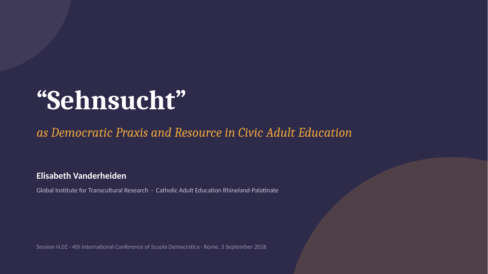

Mosaic of Longing
Sehnsuchtsmosaik
A growing digital artwork in which people express their longings towards political and social conditions.
Scuola Democratica 2026 · Rome
and Resource in Civic Adult Education
Presentation slides and supplementary materials for working with longing as an analytical, reflexive and methodological resource in civic adult education.

The central proposition
In civic adult education, this distance can become a starting point for reflection, dialogue and socially responsible action.
Supplementary materials
Each information sheet is available as a PDF download.
Sehnsuchtsmosaik
A growing digital artwork in which people express their longings towards political and social conditions.
Sehnsuchts-Timeline
An interactive history of people whose personal longing became a source of collective change.
Sehnsuchtsatlas
An interactive globe showing how shared motifs of longing change across cultural and political contexts.
Kartenset
Seventy culturally specific terms for longing, designed for comparison, reflection and educational dialogue.
Workshopreihe
Five independent 90-minute modules that translate the project materials into ready-to-use educational practice.
The project behind the materials
Sehnsüchte politisch integrieren, erforschen, gestalten und erleben lernen was developed by Catholic Adult Education Rhineland-Palatinate. The project explores how personal longings can be connected with social conditions, democratic reflection and political education.
How to cite
Vanderheiden, E. (2026). Sehnsucht as Democratic Praxis and Resource in Civic Adult Education (Version 1.0.0) [Educational resource]. Zenodo. https://doi.org/10.5281/zenodo.21804233